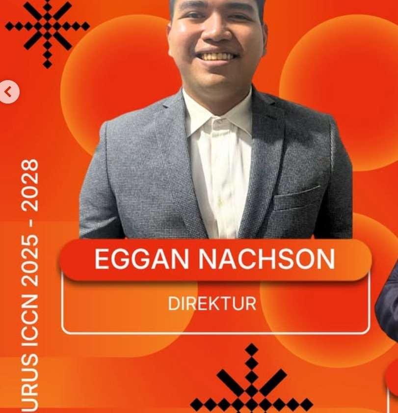
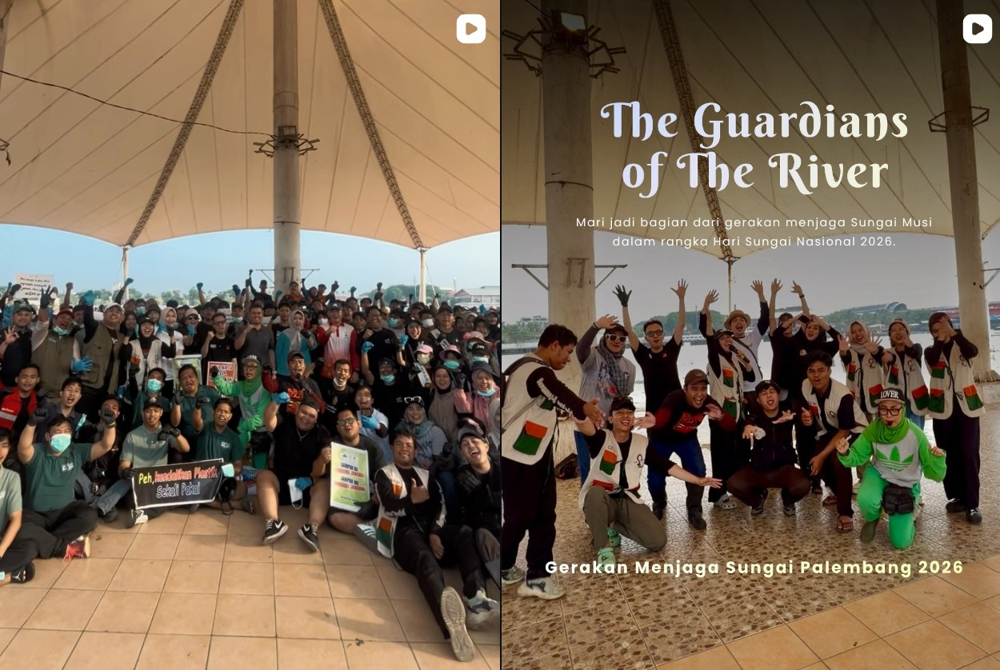
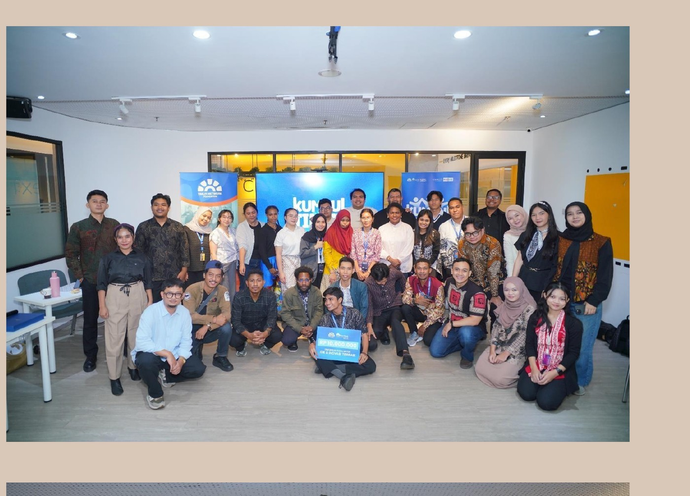
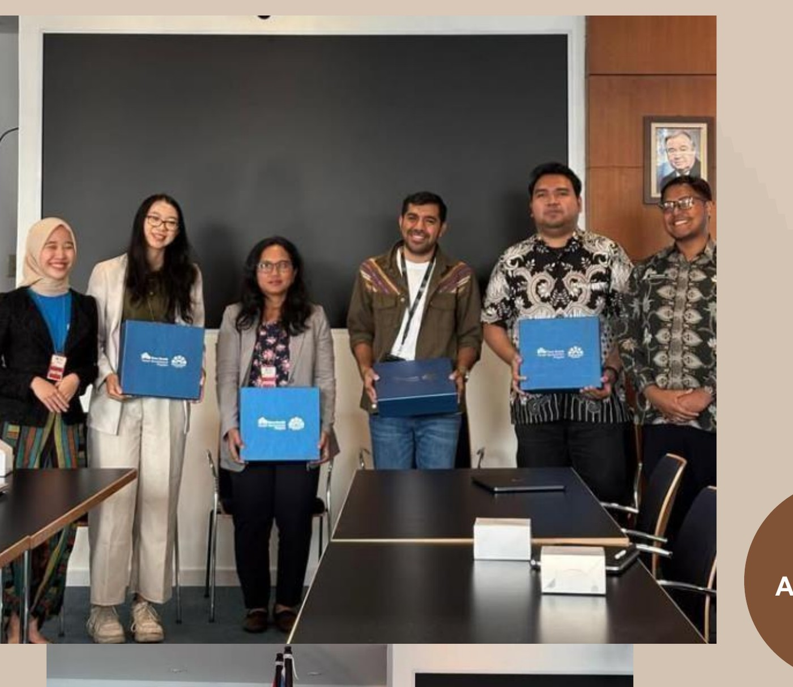
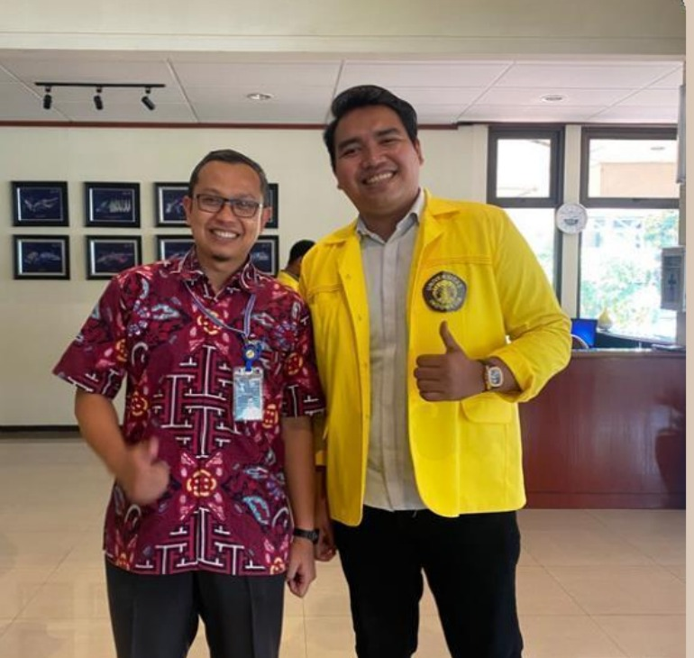
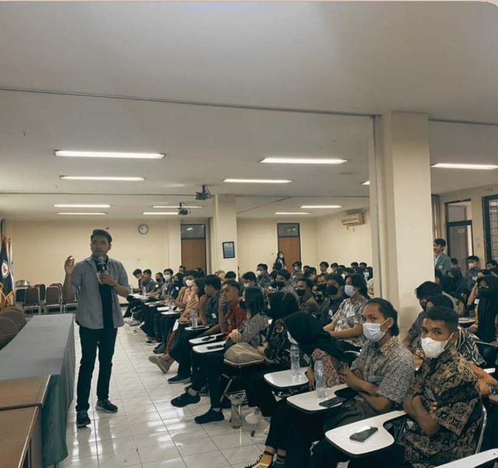

Origineel fotoarchief
Foto wacht op vervanging uit het originele archief.
Handmatige navigatie — blader door alle foto's met de pijlen.
Foto wacht op vervanging uit het originele archief.





